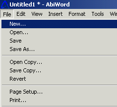
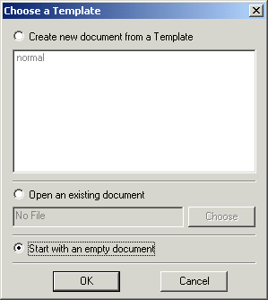

Let's start creating your letter by opening a new document.
Select"File" and from the menu at the top of your screen.
Select"New" from the list. Note: this opens the choose a template window.
Select"Start with an empty document".

Select"OK" to open your new document.
Now that you have opened your new document you can start to type your letter.